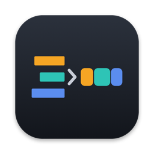

XML to FCPXML
Premiere Pro timelines in Final Cut Pro, with real titles.
What it does
Export your sequence from Premiere Pro with File ▸ Export ▸ Final Cut Pro XML, drop the file on the app, and open the result in Final Cut Pro. Titles arrive as editable text with their font, size, colour and position. A report lists anything that could not be carried over, before you import.
If clips refuse to relink in Final Cut Pro, choose Locate Media… and point to the folders with the original footage: the app reads frame rate, duration and timecode from the files themselves.
Support
Something converted wrong, or the app did something unexpected? Email kikot.vit@gmail.com. Attaching the XML and a screenshot of what looks wrong helps the most; your files are used only to fix the problem.